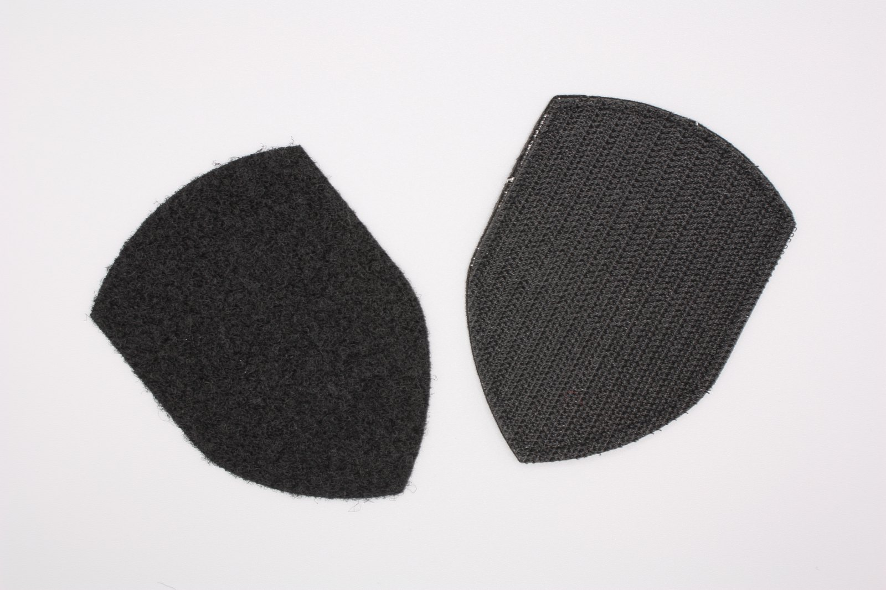

Écussons personnalisés avec fixation velcro
La fixation velcro est un système d'application disponible sur plusieurs techniques d'écussons — brodés, tissés haute définition ou PVC — après étude du projet. C'est la solution habituelle lorsque les écussons doivent rester interchangeables.

Caractéristiques techniques
- FixationAuto-agrippante, paire fournie
- CompatibilitéBroderie, tissage HD ou PVC, après étude du projet
- Usage courantTenues opérationnelles, équipements techniques, sacs à dos
- TenueCycles répétés de pose et de retrait
- Quantité minimaleÉvaluée selon le projet
Quand choisir la fixation velcro
Utile lorsqu'un même vêtement doit porter des écussons différents selon l'unité, la fonction ou le contexte d'utilisation, sans avoir à coudre à chaque fois. Si l'écusson doit au contraire rester fixé au vêtement, il faut envisager la couture ou un dos thermocollant.
Choisir la configuration de fixation adaptée à votre projet
La fixation auto-agrippante se compose d'un côté crochet et d'un côté boucle. Les écussons peuvent être fournis avec le côté crochet seul, ou en ensemble complet crochet + boucle. Le bon choix dépend de la présence ou non d'un panneau boucle sur la surface de destination.

Côté crochet seul
L'écusson est fourni avec le composant crochet au dos. Il suppose une surface boucle déjà présente sur le vêtement ou l'équipement.
Ensemble complet crochet + boucle
L'écusson est fourni avec les deux composants. Le panneau boucle peut être cousu ou appliqué sur la surface de destination.
Besoin d'écussons avec fixation velcro ?
Indiquez-nous la technique envisagée et les quantités : nous définirons ensemble la solution la plus adaptée.
Demander un devis